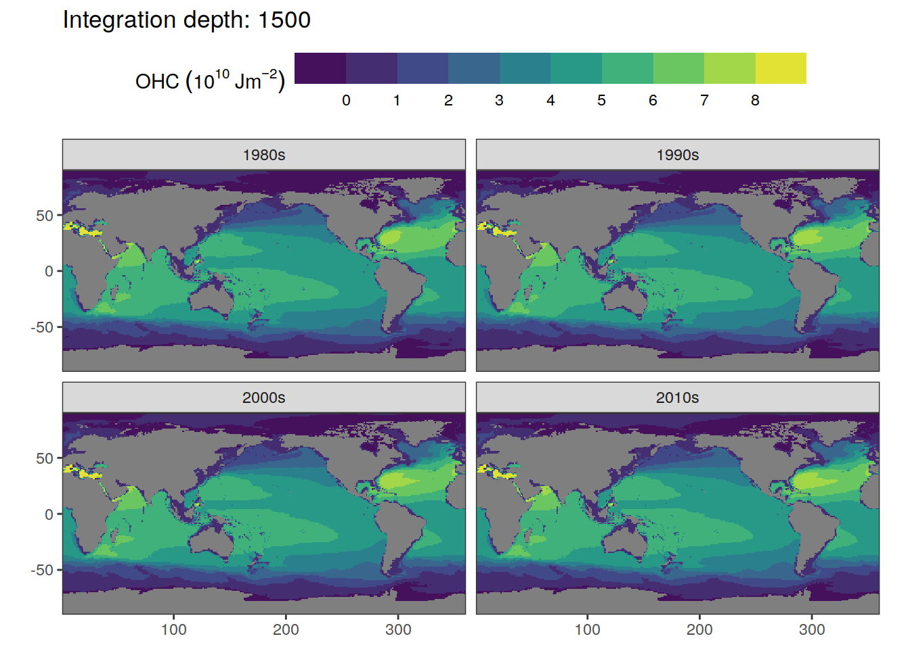
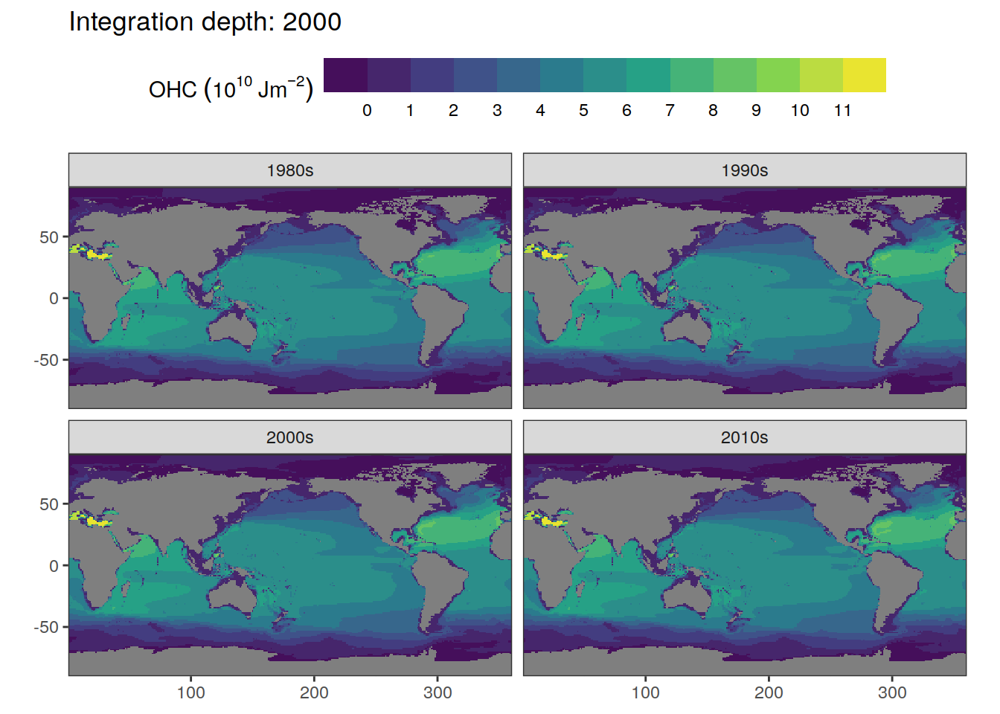
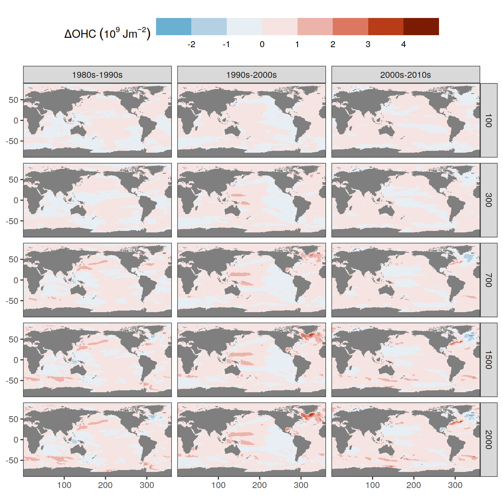
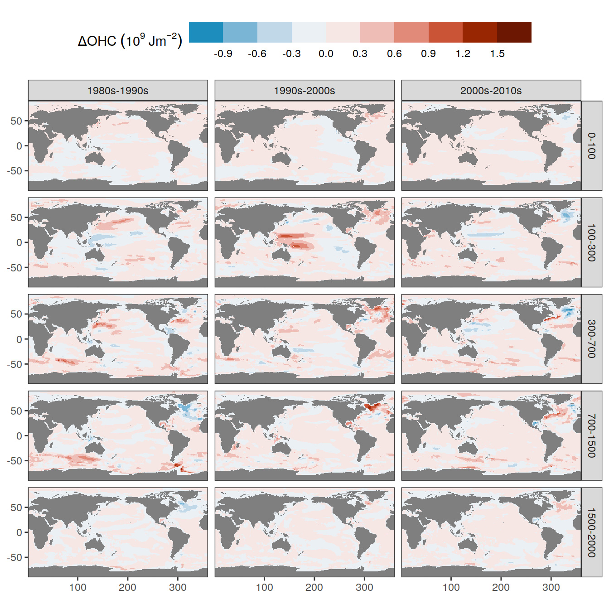
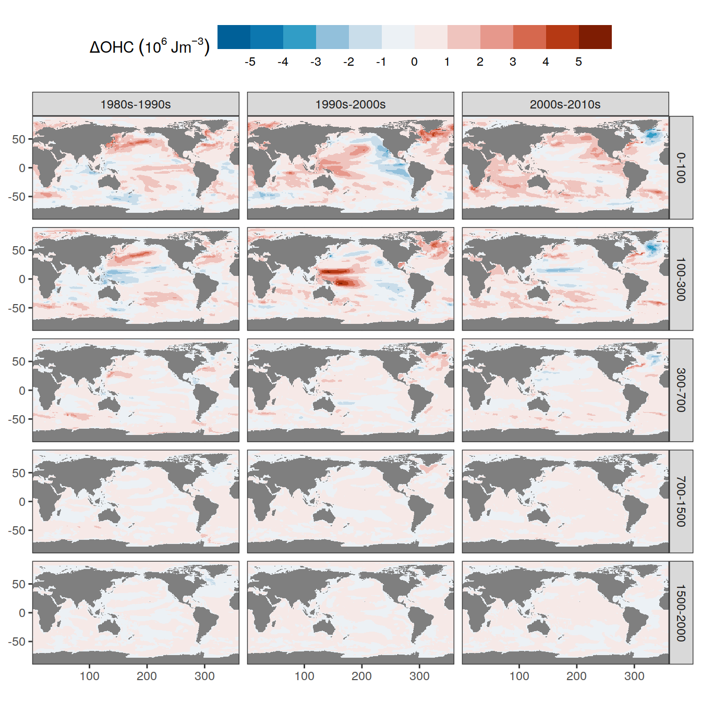

Read OHC data
Jens Daniel Müller
02 September, 2022
Last updated: 2022-09-02
Checks: 7 0
Knit directory: ocean_heat_and_carbon_content/
This reproducible R Markdown analysis was created with workflowr (version 1.7.0). The Checks tab describes the reproducibility checks that were applied when the results were created. The Past versions tab lists the development history.
Great! Since the R Markdown file has been committed to the Git repository, you know the exact version of the code that produced these results.
Great job! The global environment was empty. Objects defined in the global environment can affect the analysis in your R Markdown file in unknown ways. For reproduciblity it’s best to always run the code in an empty environment.
The command set.seed(20220901) was run prior to running the code in the R Markdown file. Setting a seed ensures that any results that rely on randomness, e.g. subsampling or permutations, are reproducible.
Great job! Recording the operating system, R version, and package versions is critical for reproducibility.
Nice! There were no cached chunks for this analysis, so you can be confident that you successfully produced the results during this run.
Great job! Using relative paths to the files within your workflowr project makes it easier to run your code on other machines.
Great! You are using Git for version control. Tracking code development and connecting the code version to the results is critical for reproducibility.
The results in this page were generated with repository version 3128baa. See the Past versions tab to see a history of the changes made to the R Markdown and HTML files.
Note that you need to be careful to ensure that all relevant files for the analysis have been committed to Git prior to generating the results (you can use wflow_publish or wflow_git_commit). workflowr only checks the R Markdown file, but you know if there are other scripts or data files that it depends on. Below is the status of the Git repository when the results were generated:
Ignored files:
Ignored: .Rhistory
Ignored: .Rproj.user/
Untracked files:
Untracked: code/Workflowr_project_managment.R
Note that any generated files, e.g. HTML, png, CSS, etc., are not included in this status report because it is ok for generated content to have uncommitted changes.
These are the previous versions of the repository in which changes were made to the R Markdown (analysis/read_ohc_data.Rmd) and HTML (docs/read_ohc_data.html) files. If you’ve configured a remote Git repository (see ?wflow_git_remote), click on the hyperlinks in the table below to view the files as they were in that past version.
| File | Version | Author | Date | Message |
|---|---|---|---|---|
| Rmd | 3128baa | jens-daniel-mueller | 2022-09-02 | adapted color legends |
| html | 319913e | jens-daniel-mueller | 2022-09-02 | Build site. |
| Rmd | d61f31a | jens-daniel-mueller | 2022-09-02 | revised total OHC maps |
| html | 56ff3fe | jens-daniel-mueller | 2022-09-02 | Build site. |
| Rmd | e6d756b | jens-daniel-mueller | 2022-09-02 | cleaned code |
| html | f300ac9 | jens-daniel-mueller | 2022-09-02 | Build site. |
| Rmd | e262225 | jens-daniel-mueller | 2022-09-02 | cleaned code |
| html | 2869152 | jens-daniel-mueller | 2022-09-02 | Build site. |
| Rmd | 11f0e38 | jens-daniel-mueller | 2022-09-02 | computed decadal changes per depth layer |
library(stars)
library(tidyverse)
library(colorspace)
library(lubridate)theme_set(theme_bw())1 Read data
Observation-based estimates of the ocean heat content (OHC) were downloaded from:
http://www.ocean.iap.ac.cn
Latest relevant publication:
Cheng et al. (2022)
https://doi.org/10.1175/JCLI-D-21-0895.1
path_ohc <-
"/nfs/kryo/work/updata/cheng/IAP_Ocean_heat_content_0_2000m/"
path_root <-
"/nfs/kryo/work/jenmueller/ocean_heat_and_carbon_content/data_preprocessed"files_ohc <- list.files(path_ohc,
pattern = "OHC_")
files_ohc <- files_ohc[481:961]
dates_ohc <- as.Date(paste(str_sub(files_ohc, 22, 25), str_sub(files_ohc, 33, 34),"15", sep = "/"),
format = "%Y/%m/%d")
decades_ohc <- dates_ohc[seq(1,length(dates_ohc),120)]
ohc_stars <- read_stars(paste0(path_ohc,
files_ohc),
along = list(date = dates_ohc),
quiet = TRUE)2 Regridding
OHC data are originally provided:
- with monthly resolution
- on a 1x1 degree horizontal grid
- integration depth of 100, 300, 700, 1500, and 2000m
- for the period 1960 - 2021
For the purpose of this exploratory analysis, we regrid the data to:
- decadal resolution
- a 5x5 degree horizontal grid
- and focus on the 1980 - 2019 period
# horizontal regridding
r5 = st_as_stars(st_bbox(ohc_stars), dx = 5, dy = 5)
ohc_stars_mean = st_warp(ohc_stars, r5)
rm(r5)
# aggregate to decades
ohc_stars_mean <-
aggregate(ohc_stars_mean, by = decades_ohc, FUN = mean, na.rm = TRUE)
ohc_stars_mean <- ohc_stars_mean %>%
slice(time, 1:length(decades_ohc)-1)
# convert decade label
decades_ohc <- paste0(str_sub(st_get_dimension_values(ohc_stars_mean, "time"), 1,4), "s")
ohc_stars_mean <- st_set_dimensions(ohc_stars_mean, "time", values = decades_ohc)3 Total OHC column inventories
for (i_name in names(ohc_stars_mean)) {
# i_name <- names(ohc_stars_mean)[1]
print(
ggplot() +
geom_stars(data = ohc_stars_mean,
aes(x, y, fill = !!sym(i_name) / 1e10)) +
facet_wrap( ~ time) +
coord_quickmap(expand = 0) +
scale_fill_viridis_c(name = expression(OHC ~ (10 ^ 10 ~ J * m ^ -2))) +
labs(title = paste(
"Integration depth:", str_remove(i_name, "OHC")
)) +
theme(axis.title = element_blank())
)
}
4 Decadal changes
4.1 Total column inventories
ohc_decade <- ohc_stars_mean %>%
as_tibble()
ohc_decade <- ohc_decade %>%
rename(lat = y,
lon = x,
decade = time)
ohc_decade_change <- ohc_decade %>%
arrange(decade) %>%
pivot_longer(
starts_with("OHC"),
values_to = "OHC",
names_to = "depth",
names_prefix = "OHC"
) %>%
mutate(depth = as.numeric(depth)) %>%
group_by(lon,lat,depth) %>%
mutate(delta_OHC = OHC - lag(OHC),
delta_decade = paste(lag(decade), decade, sep = "-")) %>%
ungroup() %>%
filter(decade != first(decade))
ohc_decade_change <- ohc_decade_change %>%
mutate(delta_OHC = delta_OHC / 1e9)
ohc_decade_change %>%
ggplot(aes(lon, lat, fill = delta_OHC)) +
geom_raster() +
coord_quickmap(expand = 0) +
scale_fill_continuous_divergingx(palette = "RdBu",
rev = TRUE,
name = expression(Delta * OHC ~ (10 ^ 9 ~ J * m ^ -2))) +
facet_grid(depth ~ delta_decade) +
theme(axis.title = element_blank(),
legend.position = "top")
| Version | Author | Date |
|---|---|---|
| 56ff3fe | jens-daniel-mueller | 2022-09-02 |
4.2 Depth layer column inventories
4.2.1 Total change
ohc_decade_change_layer <- ohc_decade_change %>%
arrange(depth) %>%
group_by(lon, lat, delta_decade) %>%
mutate(delta_OHC_layer = delta_OHC - lag(delta_OHC),
layer_thickness = depth - lag(depth),
delta_OHC_layer_per_m = delta_OHC_layer / layer_thickness,
layer = paste(lag(depth), depth, sep = "-"),
layer = fct_inorder(layer)) %>%
ungroup() %>%
filter(layer != min("NA-100"))
ohc_decade_change_layer %>%
ggplot(aes(lon, lat, fill = delta_OHC_layer)) +
geom_raster() +
coord_quickmap(expand = 0) +
scale_fill_continuous_divergingx(palette = "RdBu",
rev = TRUE,
name = expression(Delta * OHC ~ (10 ^ 9 ~ J * m ^ -2))) +
facet_grid(layer~delta_decade) +
theme(axis.title = element_blank(),
legend.position = "top")
ohc_decade_change_layer %>%
ggplot(aes(lon, lat, fill = delta_OHC_layer_per_m)) +
geom_raster() +
coord_quickmap(expand = 0) +
scale_fill_continuous_divergingx(palette = "RdBu",
rev = TRUE,
name = expression(Delta * OHC ~ (10 ^ 9 ~ J * m ^ -3))) +
facet_grid(layer~delta_decade) +
theme(axis.title = element_blank(),
legend.position = "top")
4.2.2 “Concentration” change
ohc_decade_change_layer %>%
ggplot(aes(lon, lat, fill = delta_OHC_layer_per_m*1e3)) +
geom_raster() +
coord_quickmap(expand = 0) +
scale_fill_continuous_divergingx(palette = "RdBu",
rev = TRUE,
name = expression(Delta * OHC ~ (10 ^ 6 ~ J * m ^ -3))) +
facet_grid(layer~delta_decade) +
theme(axis.title = element_blank(),
legend.position = "top")
# st_crs(ohc_stars_mean) = 4326
# st_transform(ohc_stars_mean, st_crs(9001))
sessionInfo()R version 4.1.2 (2021-11-01)
Platform: x86_64-pc-linux-gnu (64-bit)
Running under: openSUSE Leap 15.3
Matrix products: default
BLAS: /usr/local/R-4.1.2/lib64/R/lib/libRblas.so
LAPACK: /usr/local/R-4.1.2/lib64/R/lib/libRlapack.so
locale:
[1] LC_CTYPE=en_US.UTF-8 LC_NUMERIC=C
[3] LC_TIME=en_US.UTF-8 LC_COLLATE=en_US.UTF-8
[5] LC_MONETARY=en_US.UTF-8 LC_MESSAGES=en_US.UTF-8
[7] LC_PAPER=en_US.UTF-8 LC_NAME=C
[9] LC_ADDRESS=C LC_TELEPHONE=C
[11] LC_MEASUREMENT=en_US.UTF-8 LC_IDENTIFICATION=C
attached base packages:
[1] stats graphics grDevices utils datasets methods base
other attached packages:
[1] lubridate_1.8.0 colorspace_2.0-2 forcats_0.5.1 stringr_1.4.0
[5] dplyr_1.0.7 purrr_0.3.4 readr_2.1.1 tidyr_1.1.4
[9] tibble_3.1.6 ggplot2_3.3.5 tidyverse_1.3.1 stars_0.5-5
[13] sf_1.0-5 abind_1.4-5 workflowr_1.7.0
loaded via a namespace (and not attached):
[1] httr_1.4.2 sass_0.4.0 jsonlite_1.7.3 viridisLite_0.4.0
[5] modelr_0.1.8 bslib_0.3.1 assertthat_0.2.1 getPass_0.2-2
[9] highr_0.9 cellranger_1.1.0 yaml_2.2.1 pillar_1.6.4
[13] backports_1.4.1 glue_1.6.0 digest_0.6.29 promises_1.2.0.1
[17] rvest_1.0.2 htmltools_0.5.2 httpuv_1.6.5 pkgconfig_2.0.3
[21] broom_0.7.11 haven_2.4.3 scales_1.1.1 processx_3.5.2
[25] whisker_0.4 later_1.3.0 tzdb_0.2.0 git2r_0.29.0
[29] proxy_0.4-26 generics_0.1.1 farver_2.1.0 ellipsis_0.3.2
[33] withr_2.4.3 cli_3.1.1 magrittr_2.0.1 crayon_1.4.2
[37] readxl_1.3.1 evaluate_0.14 ps_1.6.0 fs_1.5.2
[41] fansi_1.0.2 xml2_1.3.3 lwgeom_0.2-8 class_7.3-20
[45] tools_4.1.2 hms_1.1.1 lifecycle_1.0.1 munsell_0.5.0
[49] reprex_2.0.1 callr_3.7.0 compiler_4.1.2 jquerylib_0.1.4
[53] e1071_1.7-9 rlang_1.0.2 classInt_0.4-3 units_0.7-2
[57] grid_4.1.2 rstudioapi_0.13 labeling_0.4.2 rmarkdown_2.11
[61] gtable_0.3.0 DBI_1.1.2 R6_2.5.1 knitr_1.37
[65] fastmap_1.1.0 utf8_1.2.2 rprojroot_2.0.2 KernSmooth_2.23-20
[69] stringi_1.7.6 parallel_4.1.2 Rcpp_1.0.8 vctrs_0.3.8
[73] dbplyr_2.1.1 tidyselect_1.1.1 xfun_0.29